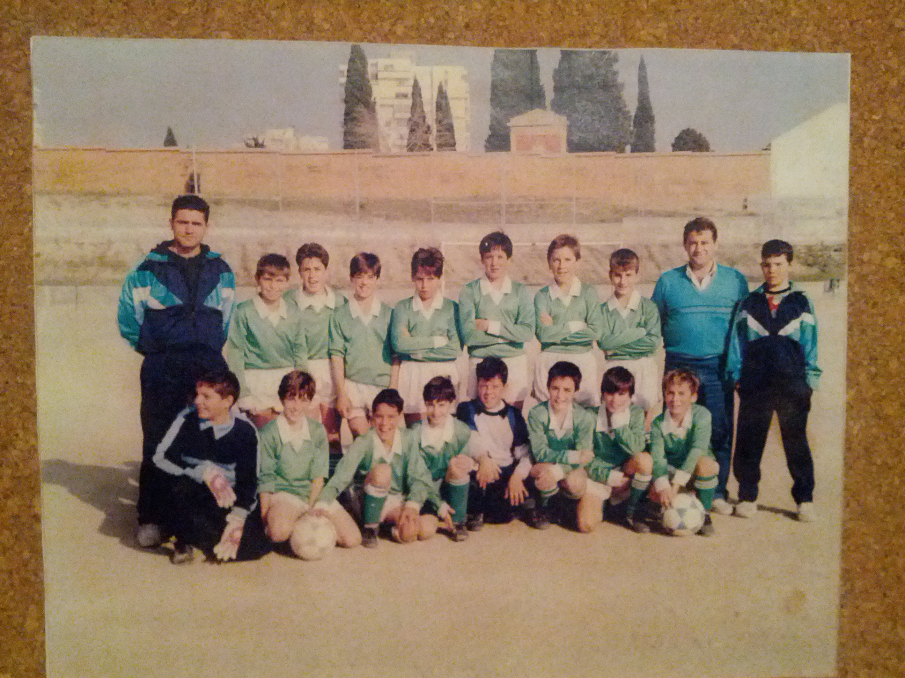
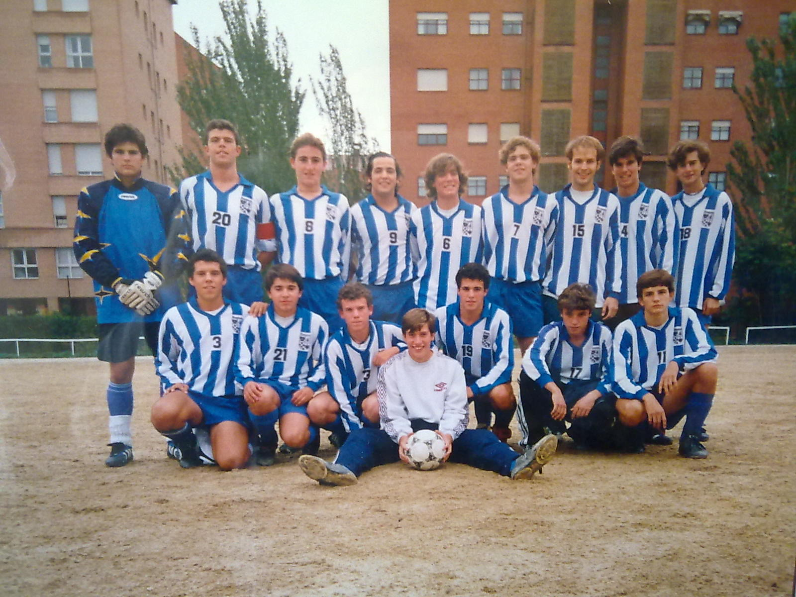
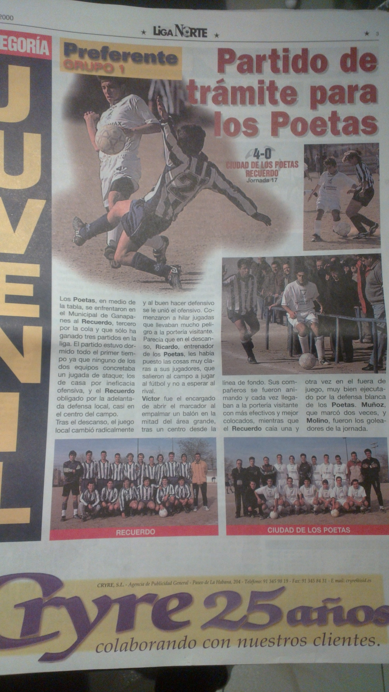
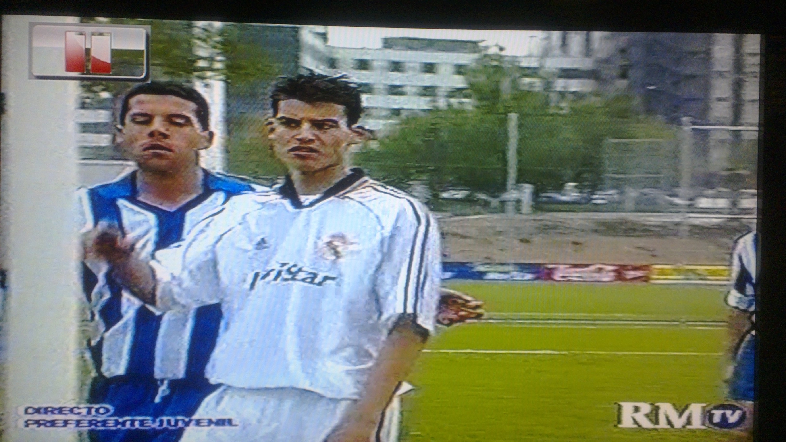
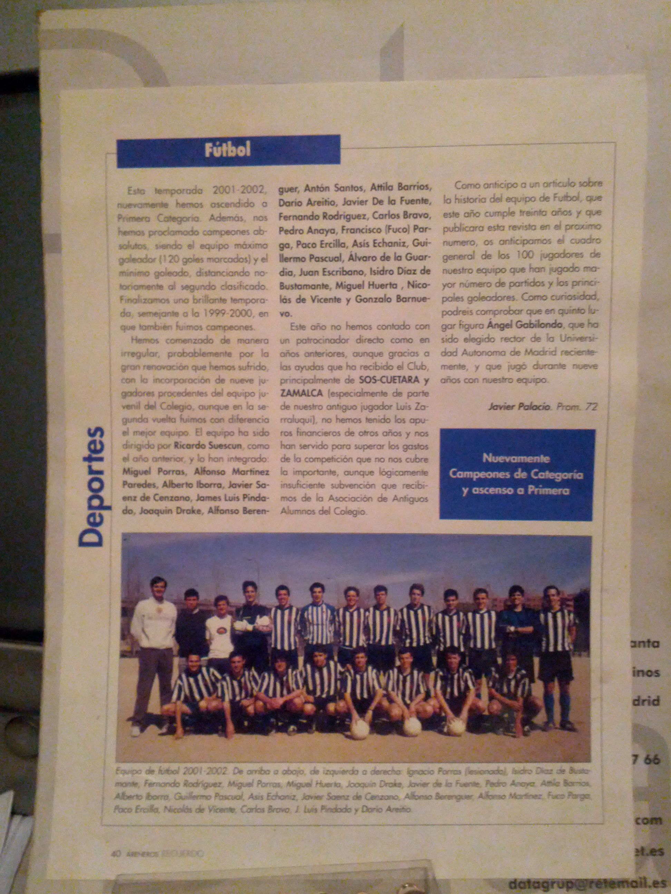
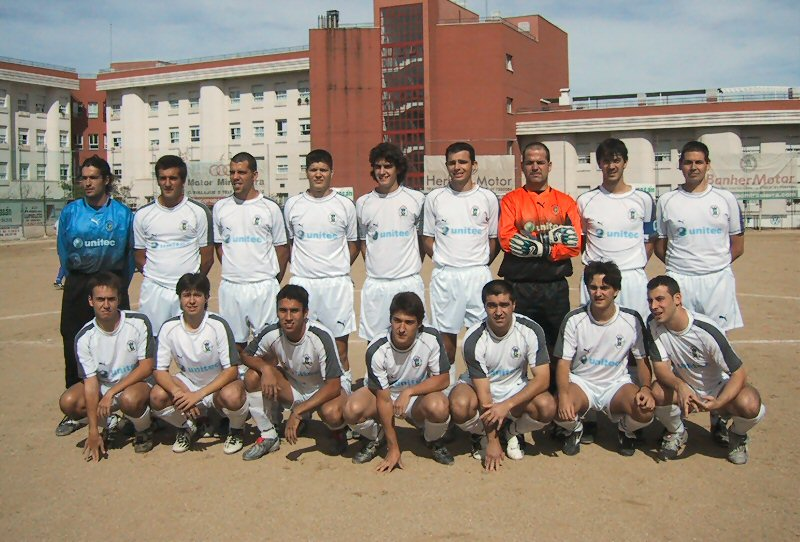

Futbol
Al igual que la mayoría de chicos de mi generación, mis primeros recuerdos de fútbol son en la pequeña plazuela que hay debajo de mi primera casa jugando con los amigos del barrio (Samu, Ángel, Rafi, Dani, Javi y Jesús) al futbol con dos jerseis como porterías así como en el patio del colegio donde salíamos como locos según sonaba la sirena del recreo para elegir equipos. De ahí que mi primer equipo fuera el equipo de futbol sala del colegio Santísimo Sacramento, donde jugábamos contra otros colegios religiosos como Calasancio, Salesianos de Atocha o Valdeluz. En ese equipo se forjó mi pasión por el fútbol con mis amigos Jose y Ramón, con los que tras el partido no faltaba una fanta de naranja con nuestros padres en el bar más cercano al de nuestro colegio (aquí se forjaron las cañas postfútbol también ;-). Esta amistad futbolística traspasó los muros del colegio hasta tal punto que también íbamos los tres juntos con nuestros padres al bernabéu, por aquel entonces con precios populares y donde los socios accedíamos a las gradas bajas de pie, un auténtico lujo que te permitía hablar con los jugadores que calentaban, subirte a la valla con los goles,etc.. Cosas que hoy en día ya no se ven. El siguiente pasito en el fútbol fue en el equipo de mi barrio, el Esperanza, aunque esta vez de fútbol 11 , orgullo de todos los chavales que viviamos por allí y del que todo el mundo conocía los nombres de los chicos que jugaban en él. En aquella época en mi colegio decidieron no continuar con los equipos de fútbol sala más allá de benjamines, con lo que a lo que nos dedicábamos era a jugar en patio del colegio y en el campo de futbol sala del polideportivo de Esperanza, donde se organizaban grandes "rey de la pista" con equipos que se iban formando según iba llegando gente al polideportivo. Era algo genial, siempre te tocaba jugar con gente distinta dependiendo de quien llegara contigo en ese momento al poli. En uno de esos partidos, coincidí con Cuqui, auténtica estrella del barrio e integrante del Esperanza y al que deslumbré con mis paradas (jejeje). En aquella época me gustaba alternar de portero y jugador y de portero se me daba especialmente bien, por lo que Cuqui me invitó a ir a entrenar un día con ellos para probar de portero. Y ahí llegó mi primera experiencia "seria" con el fútbol. Para mí estar involucrado en un equipo con un bar y club social propio(al que había que ir a firmar las convocatorias los viernes) , pasando revisiones médicas, con público en las bandas, me hacía sentir un profesional de todo esto con 10 años.
Mis siguientes pasos, dado que empezó la pretemporada con el Esperanza, y como buen equipo serio se corria mucho, dejé el equipo ya que no estaba (ni lo sigo estando) hecho de esa pasta. Continué como portero en un equipo de fubol 11 en una liga de aficionados en el Polideportivo Luis Aragones con mis amigos del barrio Javi y Rafi. Me fue bien ya que no tenían portero y de vez en cuando me subían al equipo de los mayores, era el "Bar Sami". De ahí ya luego me mudé al barrio de Arroyo del Fresno a la vez que me cambié de colegio, nuestra señora del Recuerdo. Tras tres o cuatro años buscando mi sitio (llegué a pasar por el equipo del Colegio de Baloncesto en 8º Curso con 14 años en el primer equipo infantil, jugando contra buenos equipos como el Fuenlabrada o Estudiantes al que me tí cinco puntos..jeje) pasando como portero por el Adarve (no tenían portero y yo buscaba de nuevo equipo de fútbol). Tras este medio año jugando como portero reserva en Adarve (recuerdo aún grandes jugadores como Óscar, Sergio, Juancar con el que más tarde coincidiría de nuevo en el Ganda, o el gigantón Felipe) al año siguiente intenté entrar como jugador. En aquella época el Adarve ya empezaba a ser un equipo serio, recuerdo un central llamado Mario que venía del Real Madrid cedido, el entrenador venía del Real Madrid también junto a Héctor, mi entrenador del año anterior y a la postre vecino del barrio de las letras, y entrar como jugador se hizo muy complicado, así que salí de nuevo en busca de otras oportunidades. Sucedió entonces un hecho que cambió mi vida para siempre. En el autobús camino de mi nueva casa, el 134, coincidía siempre con un par de chicos que jugaban al fútbol, unos tales Joaquín Campillo y Guillermo Pascual. Este último me dió mucho la brasa para pasarme a entrenar un día con el equipo del colegio a pesar de que yo le insistía en que no tenía nivel, pero tras un primer entrenamiento en el que don Guillermo Pascual se arrepentería toda la vida de presentarme debido a mi camiseta de Zamorano, más tarde porque al irme a ver hacer las pruebas para el Real Madrid y mentir para faltar ese día al colegio le castigaron sin viaje de curso a la nieve, nunca más les pude dejar y se convirtieron junto al resto del equipo, en, además de compañeros de equipo, amigos para siempre.
Tras un primer medio año en el que la ficha se estuvo tramitando (jejejeje) al año siguiente ya empezaba a dar algo más de nivel y me aceptaron en el equipo. Tras tres años en los que llegamos incluso a salir en los medios
 y a empatar contra el Real Madrid en la antigua Ciudad Deportiva (único punto que se dejó en toda la temporada junto a otro empate contra el Adarve) TELEVISADO!! Una vez acabamos la época juvenil, pasamos la mayoría al equipo de antiguos alumnos, cosa que nos imponía gran respeto ya que sólo los mejores jugadores de cada generación (o eso se suponía) podían jugar ahí. Yo tuve suerte y aquel año tocó un cambio generacional, así que necesitaban jugadores de primer año sí o sí, por lo que ese año no jugué demasiado.
Tras ganar la liga de segunda regional y por tanto ascender, viendo que no tendría muchas más opciones que el año anterior me decidí a cambiar de equipo, y busqué en el barrio. Bajé un día de pretemporada al campo de lacoma, había dos equipos entrenando. Casualidades de la vida o más bien mi vagancia natural me hizo preguntar al equipo que entranaba en la mitad del campo más cercano, el Ramón Gómez de la Serna, uno de los equipos con más "personalidad" de todo el fútbol madrileño. Una gran esperiecia que no hubiera cambiado por nada. El otro equipo que estaba entrando, por cierto, era Lacoma, equipo de máxima rivalidad y con el que tuvimos algún percance con los Manolo, Tano, Pozi, Cavanillas y compañia (incluso mi primo!!)...
Tras un año interesante en el "Frente Botellín", esa misma temporada nos enfrentamos a un tal Movistar Gandarío, que ganaría la liga de calle y que casualmente jugaban en otro de los campos del barrio (Nuestra Señora del Luján), así que me decidí a dar el cambio y empezar con ellos la temporada 2003/2004
Cual fue mi sorpresa al llegar, que me encontraba con un equipo cuyo entrenador era el extesorero del Real Madrid don Manuel Fernández Trigo que junto a su hijo, su primo y algunos amigos habían fundado un año antes lo que serían los cimientos de un gradísimo equipo. Los éxitos no tardaron en llegar y rápidamente nos convertimos en uno de los mejores equipos de la categoría, intentando siempre tratar bien al balón, incluso a veces desplegando un fútbol espectacular. En cambio de madurez del equipo vino con el cambio de campo a Dehesa Vieja, uno de los primeros campos públicos de césped artificial de lo que en aquella época era última generación, un auténtico lujo que nos permitió desplegar aún mejor nuestro fútbol. Año tras año íbamos incorporando amigos al equipo (uno de los cuales mi gran Pakito o Betordi) lo que hizo que el vestuario fuera una auténtica familia, factor absolutamente clave para llegar hasta donde llegamos, a pesar de no caracterizarnos por tener jugadores de gran experiencia, ya que fuimos nosotros mismos los que crecimos como futbolístas convirtiéndose alguno en gran gran pelotero. Además, algunas salidas nocturnas y viajes como el que hicimos a Gandarío (pueblo de La Coruña que da nombre al equipo) a jugar un amistoso en la ciudad deportiva del Depor (Abegondo) como premio por el ascenso engrandecía aún más la unión entre nosotros.
Tras tres temporadas muy buenas en segunda regional en la que llegamos a coseguir una racha de 15 victorias consecutivas y en los que juego prácticamente todos los partidos, el año que me voy de erasmus el equipo consigue ascender a primera regional encontrando en mi sustituto durante mi ausencia un gran descubrimiento. Cañas (hermano del excapitán del Betis y que llegó a jugar en 2ºB) tras varios años de extremo se destapó como un central excelente, y a partir de ese momento mi condición de titular indiscutible nunca volvería a ser tal. La temporada en primera fue increíblemente bien y conseguimos ganar la liga ascendiendo a lo que sería ya la categoría máxima en la que he llegado a participar y en la que ya había profesionales del fútbol, jugando contra equipos como el Coslada, el Torrejón o el San Fernando de Henares, con verdaderos estadios con afición en algunos casos. Cumplí uno de mis sueños consiguiendo alcanzar una categoría profesional.
El año en preferente comenzó muy bien pero las lesiones y la poca experciencia que teníamos en la categoría hizo que ese mismo año descendiéramos de nuevo de categoría. Habiendo debutado ya en preferente, y con un papel secundario en el equipo, quería aprovechar mis últimos años de fútbol en otro sitio don de me fueran a dar más oportunidades. Me planteé entonces volver al que había sido mi equipo de toda la vida, el Recuerdo, que además ese mismo año había ascendido de categoría y se situaba de nuevo en preferente, así que me decidí a hacer la pretemporada con ellos. Sin yo ser muy consciente de la situación, aquellos serían mis últimos coletazos como fútbolista, ya que una lesión ocasionada en verano con la guadaña que me tuvo renqueante toda aquella pretemporada unido a los viajes por trabajo que tuve que realizar por aquel entonces, me hicieron tomar la decisión de dejar definitivamente el fútbol. Cada entranamiento salía cojeando y apenas podía golpear al balón. Mi querido compañero y capitán del equipo Goso (a la postre compañero de nuevo en el equipo de fútbol 7 del Recuerdo), tras un pisotón involuntario en el pie lesionado durante un entrenamiento, me llevó definitivamente a tomar la decisión de poner fin a mi carrera en los terrenos de juego, al menos a nivel federado. Fue entonces cuando opté por quitarme el mono de jugar con los distintos equipos de fútbol 7 en los que participaba. Mi pie no daba para mucho más pero me servía perfectamente para tener aún esa sensación de competición. La Guadaña ya había echado a andar años antes alcanzando su culmen en la final del torneo veraniego de Barcelona al que nos apuntábamos todos los años, un verdadero referente en los torneos veraniegos de fútbol 7 del panorama nacional. Hay que reconocer que la participación de nuestro querido "Pepe" (amigo de Pakito que vivía en Barcelona y había jugado en las categorías inferiores) sería la clave para aquel subcampeonato.


Además de La Guadaña, creada muchos años atrás en diversos torneos de Maratón de fútbol sala del colegio así como en el campeonato de futbol playa que ganamos en Gandía y del que soy orgulloso capitano, he pasado por muchos otros equipos de fútbol 7, el room con mis amigos Chupo, Juanan, Iñigo,etc.. aquel Waldo F.C. de Kansas en el que me volví a sentir una estrella de fútbol (imaginaros el nivel...jejej), ese otro equipo de Fútbol 5 en Kansas que se jugaba en un campo de hockey con paredes (contra las que se podía empotrar al rival!!) o el racing de santander londinense formado por componentes de la guadaña expatriados allí en el que me dió tiempo a salir en la foto de campeones (jejeje).
Pero sin duda, la mejor experiencia junto a La Guadaña es participar en el equipo de fútbol 7 de antiguos alumnos del recuerdo en el campeonato de majadahonda, considerada la primera división del fútbol 7 madrileño que aglutina gran cantidad de exfutbolistas tanto de nuestro de nivel como de incluso ex primeras como el equipo de los "Desperdicios" formado principalmente por el Atlético de Madrid con jugadores como Kiko, Mena, Pedro Riesco, Santi Denia, Paunovic, Dani, Quique Estebaranz, etc.. y otros jugadores como Marcos Asunsao o Dani ex del Albacete, aunque hay que decir que nosotros tenemos nuestra propia estrella (además de un equipazo) el gran Iñaqui ex capitán del Getafe en sus tiempos mozos.
Resumen
- Esperanza (benjamín y alevín 10 y 11 años 5º EGB)
- Bar Sami (alevín 11 años 5º EGB)
- Liga interna colegio( 13 años infantil séptimo EGB)
- Baloncesto(octavo EGB 14 años Infantil)
- Adarve(primero y principio segundo BUP Cadete 15 y 16 años)
- Recuerdo( 16 años Cadete Manolo Vilches segundo BUP)
- Recuerdo (17 años Juvenil Antonio Gasco tercero BUP)
- Recuerdo (18 años Juvenil Manolo Vilches/Fari COU)
- Recuerdo (19 años Juvenil Antonio Gasco/Atienza 1ºCarrera)
- Recuerdo (20 años Senior Richi Suéscun 2ºCarrera,Campeones de Liga 2ºRegional)
- Ramon Gomez de la Serna (21 años Javi/Marcial 3ºCarrera)
- Gandario (22 años a 28 años 3ºCarrera,Campeones de liga 1ºRegional)
- La Guadaña/Recuerdo F7 Campeones copa B Elite Fútbol, Subcampeones Business Sport Cup, Subcampeones Copa Barcelona, Campeones Liga 2º Gesdeport, Campeones torneo apertura liga Majadahonda F7


{kind=link}
{kind=link}
{kind=link}
{kind=link}
{kind=link}
{kind=link}
{kind=link}
{kind=link}
{kind=link}
{kind=link}
{kind=link}
{kind=link}
{kind=link}
{kind=link}
{kind=link}
{kind=link}
{kind=link}
{kind=link}